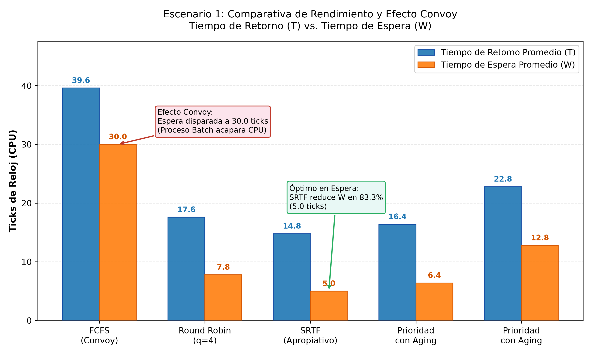
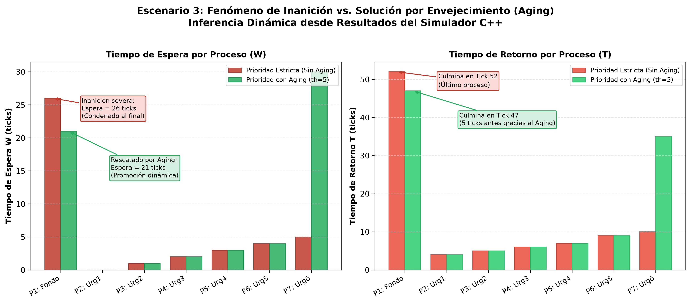
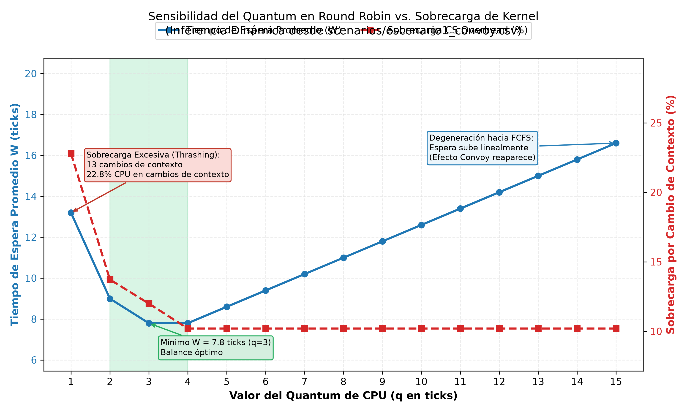

Sistemas Operativos Opción 1Planificación de CPU & Kernel Model
Simulación y Análisis Cuantitativo de Políticas de Planificación de CPU
Modelado del Ciclo de Vida de Procesos, Desalojo, Inanición y Sobrecarga de Kernel
📌 Ficha Técnica del Proyecto
Asignatura: Sistemas Operativos (Periodo 2610)
Mecanismo Seleccionado: Gestión de Procesos y Planificación de CPU
Motor Central: C++17 Puro (Modular, Determinista y Desacoplado)
Módulo Visual & Análisis: Python 3 (Matplotlib, Pandas) & JavaScript Live Studio
Duración de Sustentación: 20 Minutos
👥 Integrantes del Equipo
Desarrollador 1: Núcleo del Simulador C++, Modelado de PCB, Dispatcher y Métricas Canónicas.
Desarrollador 2: Módulo Gráfico Dinámico, Diagramas de Gantt y Diapositivas / Laboratorio Interactivo.
✅ Repositorio Git con trazabilidad individual y ramas de desarrollo separadas.
Guía del Orador (Minuto 0:00 - 1:30):
"Buenos días profesor. Hoy presentamos nuestro simulador de Sistemas Operativos enfocado en la gestión de procesos y la planificación de CPU. Hemos desarrollado desde cero un kernel determinista en C++17 modular que reproduce el comportamiento de un sistema operativo real: el Bloque de Control de Proceso (PCB), transiciones canónicas de estado, colas de E/S desacopladas, penalizaciones explícitas por cambio de contexto y mecanismos dinámicos anti-inanición."
1. Planteamiento del Problema Real
Cargas Heterogéneas y Conflictos de Recursos en Servidores Backend
1. Procesos Web/API
Peticiones interactivas (Login, Pagos, Catálogo) con ráfagas ultracortas ($2 \dots 3$ ticks). Requieren tiempo de respuesta inmediato para cumplir con acuerdos SLA.
2. Procesos E/S-Bound
Búsquedas y transferencias que alternan cómputo breve con esperas prolongadas en almacenamiento o red (estado WAITING).
3. Procesos Batch CPU-Bound
Cálculos analíticos masivos ($35 \dots 50$ ticks) que monopolizan la CPU si el planificador no implementa apropiación (*preemption*).
Los Tres Conflictos Críticos Demostrados:
Efecto Convoy: En FCFS, un proceso batch largo condena a las peticiones interactivas a esperas gigantescas.
Sobrecarga por Conmutación (CS Overhead): En Round Robin con quantum ínfimo ($q=1$), la CPU gasta más del 20% de su tiempo cambiando tablas de registros (*thrashing*).
Inanición (Starvation): En prioridad estricta, las tareas de fondo nunca reciben CPU ante un flujo incesante de tareas urgentes.
Guía del Orador (Minuto 1:30 - 4:00):
"En cualquier servidor de aplicaciones conviven tareas con naturalezas dispares. Si el planificador utiliza FCFS, sufrimos el Efecto Convoy. Si usamos Round Robin con un quantum diminuto para ser responsivos, el costo de conmutación de contexto devora la CPU. Y si usamos prioridades fijas, condenamos a las tareas de fondo a la inanición. Demostraremos experimentalmente cómo resolver este equilibrio."
2. Arquitectura del Simulador
Estructura Formal del PCB y Estados Canónicos del Kernel
base_priority y dynamic_priority (modificada por Aging).
Vector secuencial de ráfagas CPU y E/S (bursts).
Métricas acumuladas: $T_{llegada}$, $T_{inicio}$, $T_{fin}$, Espera acumulada y Conmutaciones de Contexto.
Mecanismos del Kernel Modelados
Dispatcher con Penalización: Costo explícito configurable (por defecto 1 tick de reloj) por cambio de contexto.
Cola de E/S Concurrente: Procesos bloqueados que avanzan en paralelo con la CPU.
Mecanismo de Desalojo (Preemption): Interrupción inmediata cuando entra un proceso con menor ráfaga restante o mayor prioridad.
Envejecimiento Dinámico (Aging): Si un proceso acumula $th$ ticks en READY, su prioridad se incrementa.
Guía del Orador (Minuto 4:00 - 7:00):
"Nuestra implementación modela fielmente las estructuras de datos de un kernel Unix moderno. El PCB mantiene el vector de ráfagas alternadas y registra de manera auditada cada tick de espera. El subsistema de E/S es independiente de la CPU, permitiendo que mientras un proceso hace I/O, otro ejecute en la CPU."
3. Algoritmos de Planificación Evaluados
Políticas Apropiativas vs. No Apropiativas
Algoritmo
Tipo
Criterio de Selección
Ventaja Principal
Riesgo / Desventaja
FCFS
No Apropiativo
Orden de llegada FIFO
Simplicidad, cero sobrecarga de CS
Efecto Convoy severo en cargas mixtas
Round Robin (RR)
Apropiativo
Tiempo compartido ($q$ ticks)
Alta responsividad y equidad
Degenera a FCFS si $q$ es grande; *Thrashing* si $q$ es chico
SRTF
Apropiativo
Menor tiempo restante de CPU
Minimiza el Tiempo de Espera promedio ($W$)
Requiere conocer la ráfaga a priori; Inanición a procesos largos
Prioridad con Aging
Apropiativo
Mayor prioridad dinámica ($1 = \max$)
Atención garantizada a tareas críticas
Resuelve la inanición promoviendo prioridades tras umbral $th$
Índice de Equidad de Jain ($J$): Métrica formal que mide si el servicio útil de CPU se distribuye equitativamente entre los procesos:
$$J = \frac{(\sum x_i)^2}{n \sum x_i^2}, \quad x_i = \frac{\text{CPU Total}}{\text{Tiempo de Retorno } T_i}$$
Guía del Orador (Minuto 7:00 - 10:00):
"Hemos implementado el espectro canónico completo de la literatura de Tanenbaum y Silberschatz: FCFS como línea base no apropiativa, Round Robin para tiempo compartido, SRTF como el óptimo teórico en tiempo de espera, y Prioridad Apropiativa complementada con Envejecimiento para garantizar la supervivencia de tareas postergadas."
4. Evidencia Experimental: Efecto Convoy
Escenario 1: Proceso Batch Monopolizador vs. Peticiones Interactivas

Hallazgos Cuantitativos
FCFS: Espera promedio disparada a 30.0 ticks. Las APIs de 2 ticks tuvieron que esperar 35 ticks a que terminara la analítica batch.
Round Robin ($q=4$): Reduce la espera a 7.8 ticks (reducción del 74%), dando servicio interactivo inmediato.
SRTF: Óptimo absoluto con espera de 5.0 ticks (reducción del 83.3%). Desaloja a Batch en el tick 1 y ejecuta todas las APIs primero.
Equidad de Jain: FCFS cae a $J = 0.29$ (injusticia severa), mientras que SRTF alcanza $J = 0.88$.
Guía del Orador (Minuto 10:00 - 13:30):
"En esta gráfica generada por nuestro módulo con los datos del simulador C++, podemos apreciar con total claridad el Efecto Convoy. En FCFS, el tiempo de retorno es de 39.6 ticks y la espera de 30 ticks. En cambio, SRTF desaloja a la tarea batch apenas llega la primera API y atiende a las tareas cortas, reduciendo la espera promedio a solo 5 ticks."
5. Evidencia Experimental: Inanición y Solución por Aging
Escenario 3: Tarea de Fondo Batch vs. Flujo Continuo de Alarmas Urgentes

Contraste Experimental
Prioridad Estricta (Sin Aging):
El proceso $P_1$ (Fondo, prioridad 5) sufre inanición severa; espera 26 ticks y es condenado al final (culmina en Tick 52).
Prioridad con Aging ($th=5$):
Cada 5 ticks en READY, $P_1$ sube de prioridad ($5 \to 4 \to 3 \to 2 \to 1$).
En el tick 13 alcanza prioridad 1, desaloja la CPU y termina 5 ticks antes (Tick 47).
El Aging previene el congelamiento del sistema sin degradar significativamente la latencia de las tareas críticas.
Guía del Orador (Minuto 13:30 - 16:30):
"Aquí demostramos la solución matemática a la inanición. Sin envejecimiento, la tarea de fondo es postergada indefinidamente por el flujo de alarmas. Con nuestra política de Aging, cada 5 ticks de espera en la cola de listos se promueve su prioridad dinámica, logrando arrebatar la CPU en el tick 13 y culminar antes, protegiendo al sistema de bloqueos permanentes."
6. Sensibilidad del Quantum y Conclusiones
El Dilema Latencia vs. Sobrecarga de Kernel

Compromisos de Ingeniería
Régimen de Thrashing ($q=1$): 13 conmutaciones de contexto; más del 22% del tiempo de CPU desperdiciado en registros.
Punto Dulce ($q \in [3, 5]$): Mínimo tiempo de espera ($W = 7.8$) con sobrecarga de CS controlada ($10\%$).
Degeneración hacia FCFS ($q > 10$): La espera se degrada linealmente y reaparece el Efecto Convoy.
Conclusión Final: El planificador ideal para entornos modernos no es una política estática, sino una política multinivel adaptativa que combine el tiempo compartido de Round Robin con Aging dinámico.
Guía del Orador (Minuto 16:30 - 20:00):
"Concluimos que la elección del quantum es un dilema de optimización en sistemas operativos. Ni un quantum microscópico ni uno gigantesco son viables. La zona óptima se ubica cuando el 80% de las ráfagas interactivas caben en un solo quantum, limitando la sobrecarga por conmutación al 10%. Quedamos atentos a sus preguntas."
⚙️ Configuración del Kernel
4
1
5
300ms
Reloj CPU
Tick 0
Retorno (T)
-
Espera (W)
-
Respuesta (R)
-
CPU Ocupada
0.0%
CS Sobrecarga
0.0%
Cambios CS
0
⚡ Núcleo de CPUIDLE
IDLE
Sin Proceso
Esperando despacho...
📋 Cola de Listos (READY)0 en cola
Cola vacía
⏳ Cola de Bloqueados (E/S)0 en E/S
Sin procesos bloqueados
📊 Diagrama de Gantt en Tiempo Real0 Ticks registrados
📜 Registro de Eventos del Kernel (Audit Trail)Tick a Tick
[Tick 0] Kernel inicializado. Carga del escenario completada.